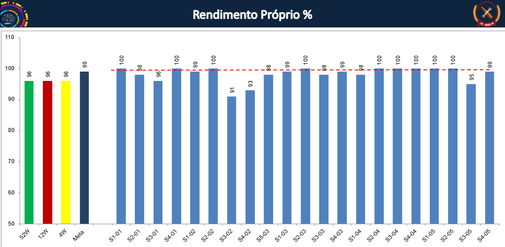

Etapa 5
Acompanhamento da eficiência por semana
Rendimento próprio com leitura cronológica das intervenções.

Rendimento próprio semanal e linha de meta de 99%.
Leitura executiva
Meta: 99%
Melhor resultado: 100%
Ponto crítico: S3-02 (91%).
Situação mais recente exibida: 99%.